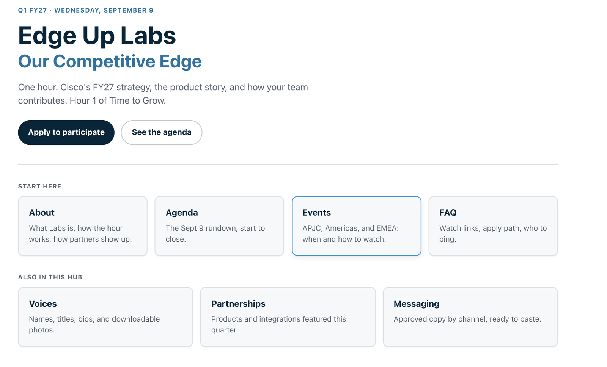

PM tooling
GitHub
The program hub and the retrospective dashboard are published from here. Partners get one destination. The retrospective turns feedback into themes and commitments.
Program hub
One place for what the program is, the agenda, who is involved, and the words partners can use.

Retrospective dashboard
Feedback becomes a few themes and the commitments the next cycle will carry. Raw comments stay off the public view.